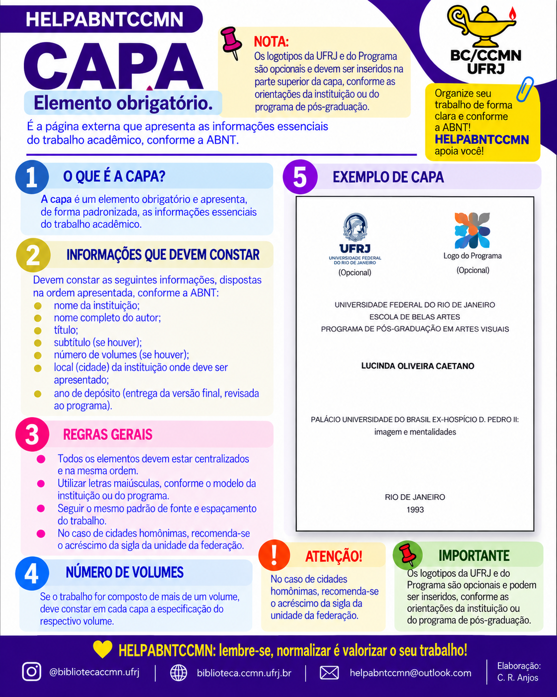
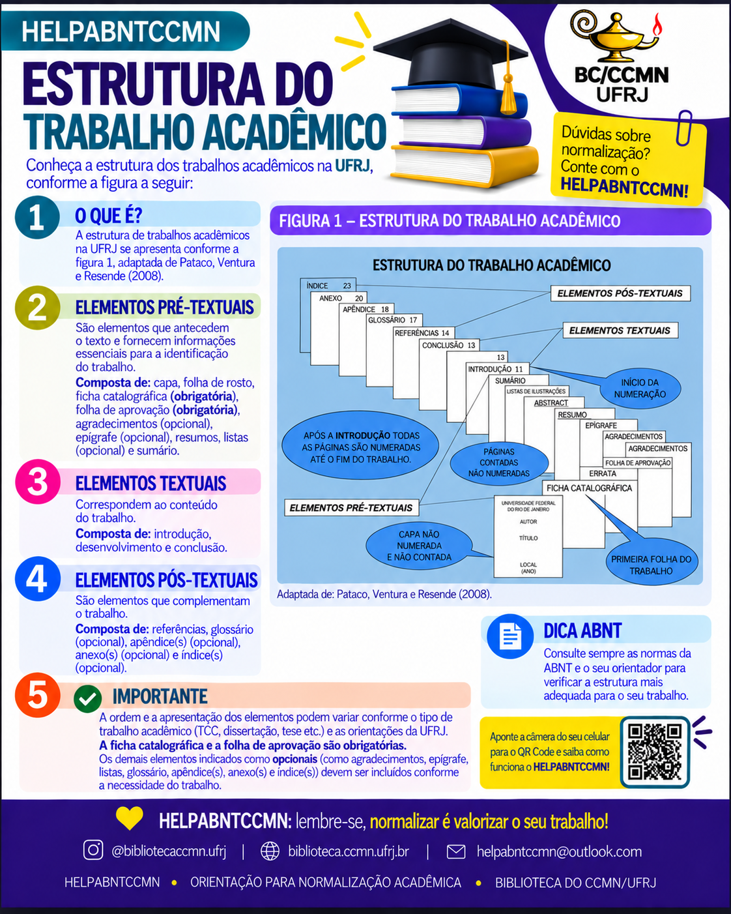
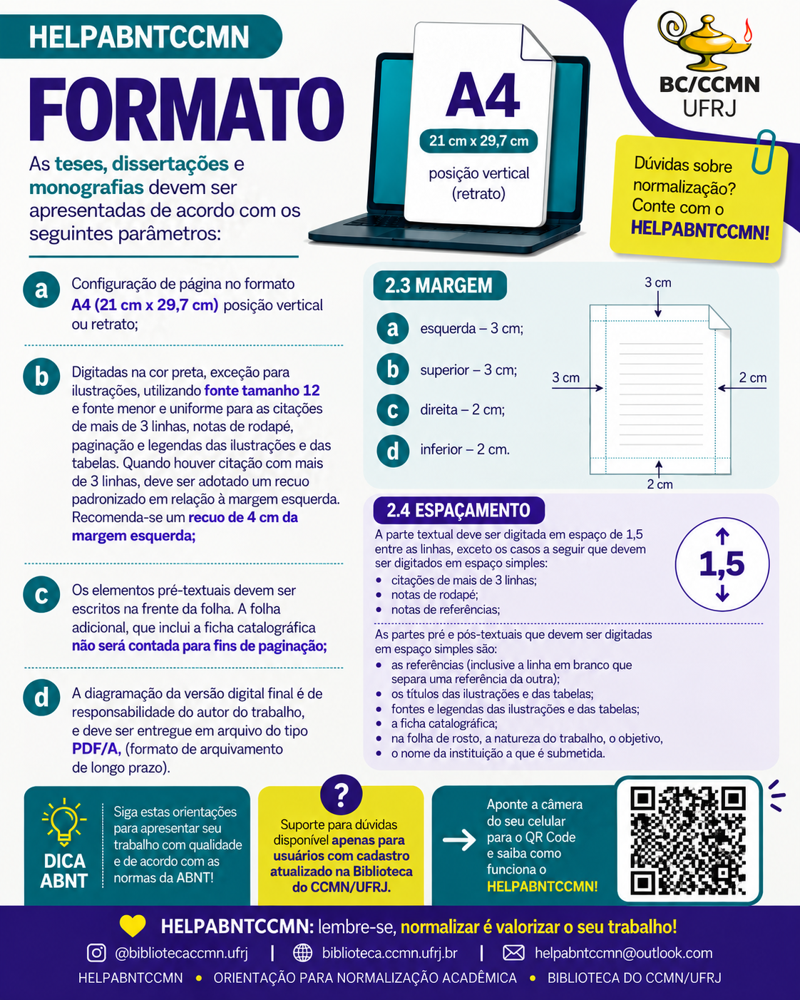
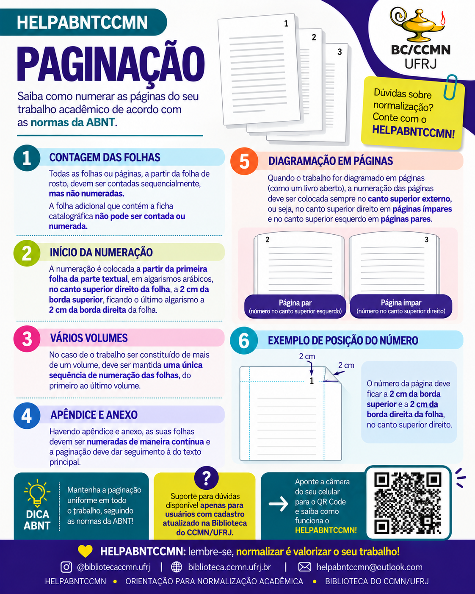
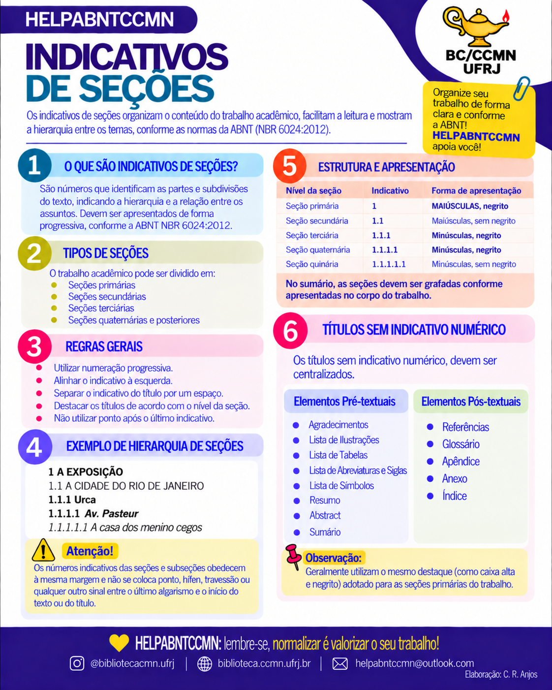
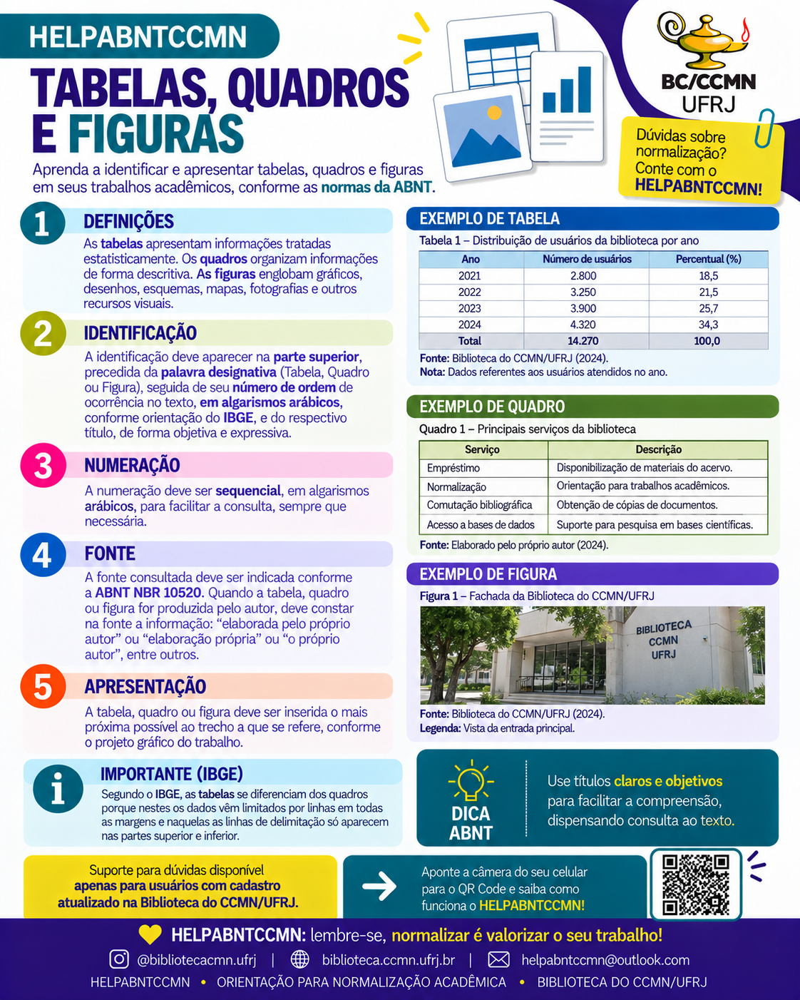
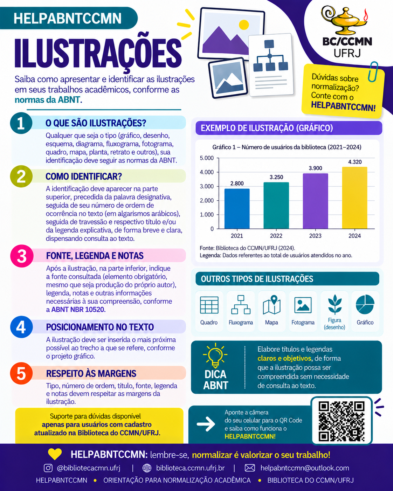
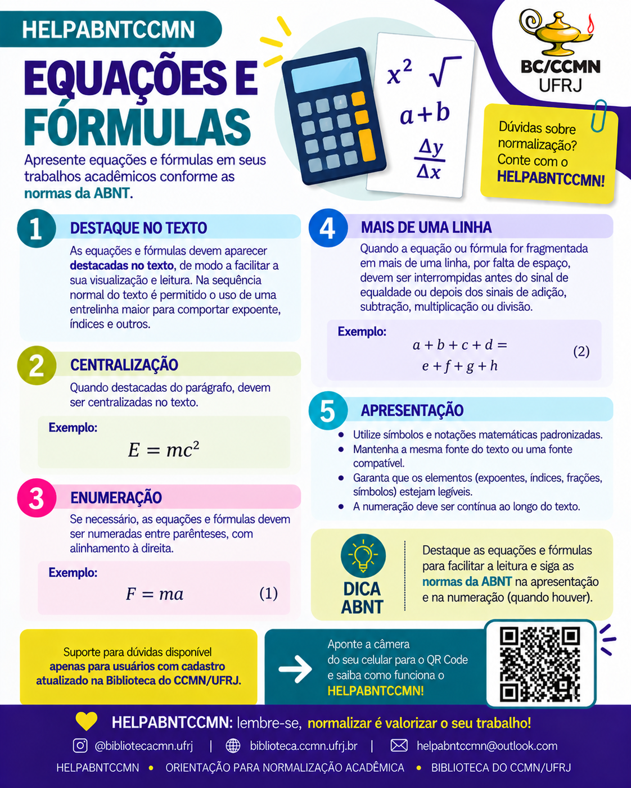
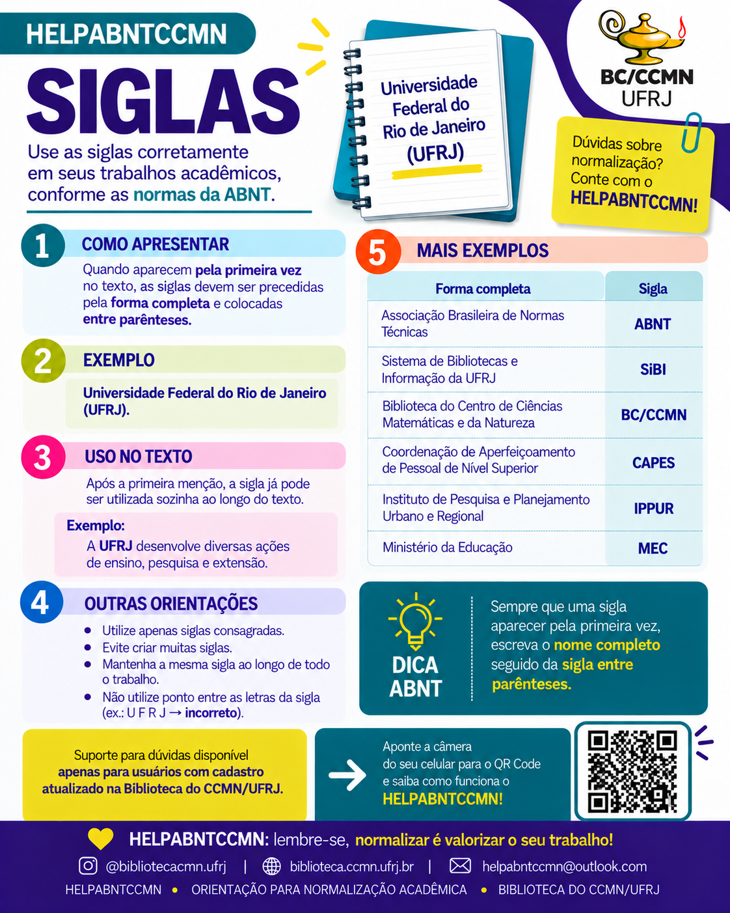

Capa
Elemento obrigatório e informações que devem constar na capa do trabalho acadêmico.
BIBLIOTECA DO CCMN/UFRJ
Encontre, de forma rápida e visual, orientações para apresentar seu trabalho acadêmico conforme as normas da ABNT.
Ver infográficosCONSULTE POR TEMA
Clique em qualquer material para ampliar e consultar as orientações.

Elemento obrigatório e informações que devem constar na capa do trabalho acadêmico.

Conheça os elementos pré-textuais, textuais e pós-textuais.

Orientações sobre formato A4, margens, fonte e espaçamento.

Veja como contar, iniciar e posicionar a numeração das páginas.

Hierarquia, numeração e apresentação das seções do trabalho.

Aprenda a identificar, numerar, apresentar e indicar fontes.

Orientações para identificação, legenda, fonte e posicionamento.

Como apresentar, centralizar e numerar equações e fórmulas.

Como apresentar a forma completa e utilizar siglas ao longo do texto.
SOBRE O PROJETO
O HELPABNTCCMN é uma iniciativa da Biblioteca do Centro de Ciências Matemáticas e da Natureza da UFRJ para apoiar a comunidade do CCMN na normalização de trabalhos acadêmicos.
Atenção: Os infográficos são materiais de orientação. Para situações específicas, consulte a norma ABNT correspondente e as orientações institucionais da UFRJ.